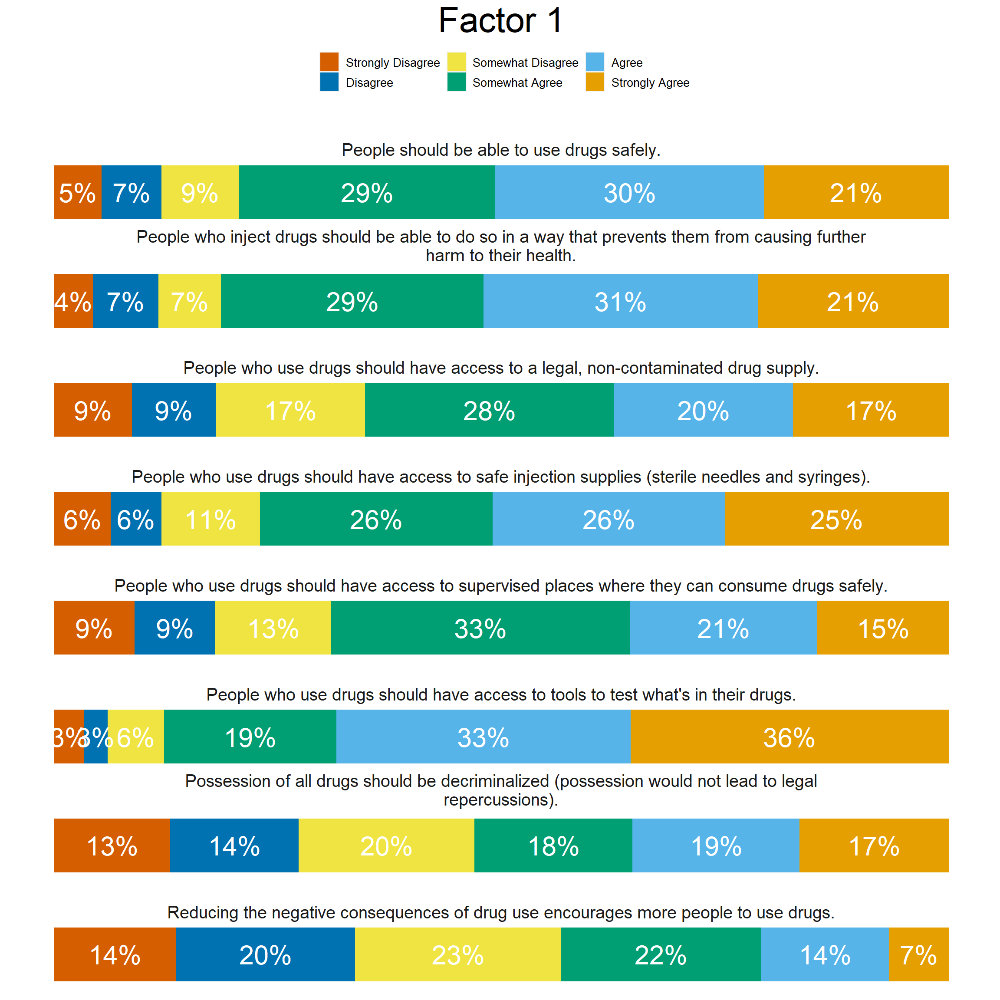
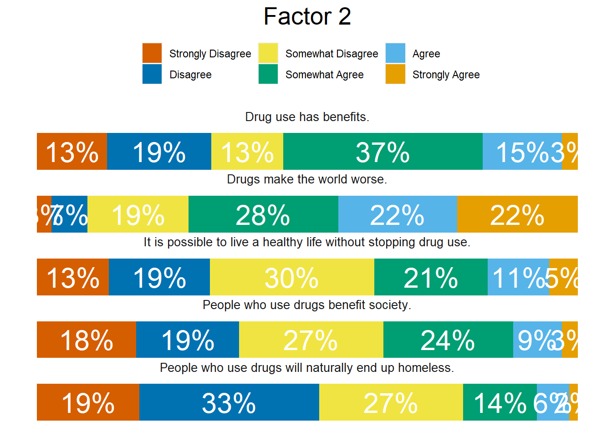
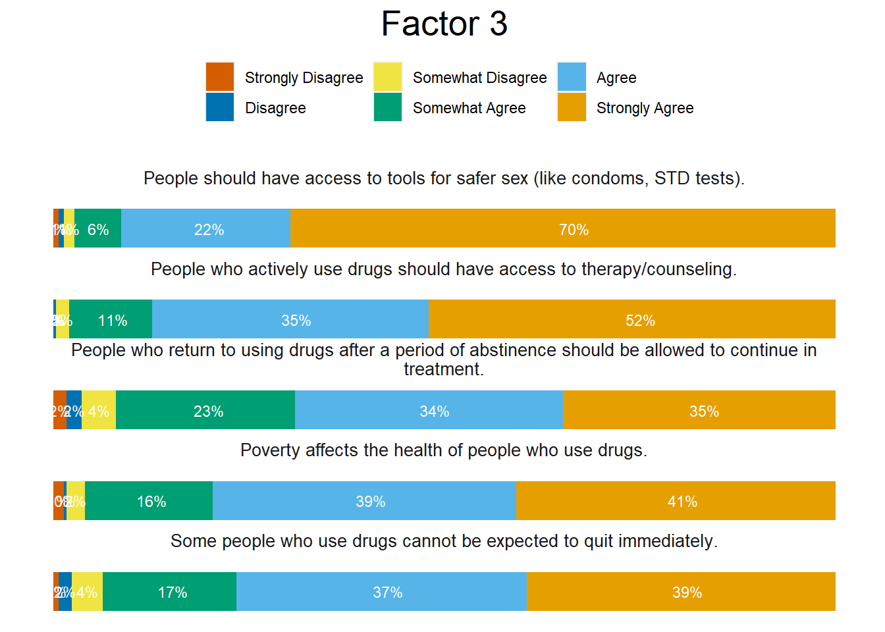

This file documents the ongoing process of analysis and visualization of the Harm Reduction Development and Validation Studies.
Item Generation
Item generation was undertaken in several stages. The first step in item generation consisted of items generated in two scales (harm reduction principles and harm reduction strategies) which were drafted by the authors and piloted with harm reduction workers in local training and harm reduction supply distribution evaluation. Following the initial pilot project, we revised and added items to address gaps that had been noted. The items were generated with regard to both the SAMHSA Harm Reduction Framework and the National Harm Reduction Coalition’s Harm Reduction Principles(https://harmreduction.org/about-us/principles-of-harm-reduction/). Once the initial item pool was generated, we consulted with Dr. David Frank, a harm reduction expert and researcher. Based on his consultation, items were further modified to be accessible to a general population.
We used Wolf et al’s (2023) Response Process Evaluation (RPE) method to ensure that a non-expert, non-harm reduction audience would understand the item content. Over X rounds of data collection, we used Prolific to collect qualitative responses to each item. As a group, we evaluated each set of responses to determine whether respondents understood or did not understand the intended meaning of each item. Based on respondent answers and suggestions, we identified items which items were generally understood, and which items should be modified or removed. The final item pool contained 45 items related to harm reduction strategies and principles. We phrased items as simply and directly as possible, occasionally splitting complex topics (experiences of discrimination, other topic) across multiple items when necessary. For study 1, items were answered on a 6-point ordinal scale from 1 (Strongly Disagree) to 6 (Strongly Agree). Following inspection of item responses, studies 2 and 3 used 5-point ordinal scales from 1 (Strongly Disagree) to 5 (Strongly Agree). Participants answered items in a random order, and completed a brief demographic survey.
People who inject drugs should be able to do so in a way that prevents them from causing further harm to their health.
q2
People should have access to tools for safer sex (like condoms, STD tests).
q3
People who use drugs should have access to naloxone/NARCAN.
q4
The general public should have access to naloxone/NARCAN.
q5
Police officers should have access to naloxone/NARCAN.
q6
People who use drugs should have access to tools to test what's in their drugs.
q7
People who use drugs should have access to safe injection supplies (sterile needles and syringes).
q8
People who use drugs should have access to safe inhalation supplies (glass stems and pipes).
q9
People who actively use drugs should have access to therapy/counseling.
q10
People who return to using drugs after a period of abstinence should be allowed to continue in treatment.
q11
Sobriety should be required for treatment.
q12
Medications used to treat addiction (buprenorphine, naltrexone, or methadone) are an appropriate treatment option for people who use drugs.
q13
Possession of "drug paraphernalia", like syringes and pipes, should be legal.
q14
People who seek medical assistance for overdoses should be protected from drug charges, arrests, and prosecutions.
q15
Sobriety should not be a requirement to access public housing.
q16
Possession of all drugs should be decriminalized (possession would not lead to legal repercussions).
q17
It should be legal for adults to purchase drugs from a dispensary/shop.
q18
People who use drugs should have access to supervised places where they can consume drugs safely.
q19
People who use drugs should have access to a legal, non-contaminated drug supply.
q20
People use drugs to escape.
q21
People should be able to use drugs safely.
q22
People who use drugs should be treated with respect.
q23
Poverty affects the health of people who use drugs.
q24
Racism affects the health of people who use drugs.
q25
Gender-based discrimination affects the health of people who use drugs.
q26
Some ways of using drugs are safer than others.
q27
People who use drugs deserve to live good lives.
q28
Reducing drug use is a reasonable goal for people who use drugs.
q29
Some people who use drugs cannot be expected to quit immediately.
q30
People who use drugs should be involved in creating the programs and policies that serve them.
q31
People in recovery from drug use should be involved in creating the programs and policies that serve them.
q32
Relapse may be a part of the recovery process.
q33
It is possible to live a healthy life without stopping drug use.
q34
People who use drugs should be forced into treatment.
q35
Using drugs is immoral.
q36
Drug use has benefits.
q37
Harm reduction complements traditional addiction prevention, treatment, and recovery services.
q38
People who use drugs benefit society.
q39
Reducing the negative consequences of drug use encourages more people to use drugs.
q40
People will use more drugs if it is safer.
q41
People who use drugs will naturally end up homeless.
q42
Drugs make the world worse.
q43
Drug use will always be part of society.
q44
Chaotic drug use is a rational response to experiences like trauma, homelessness, hunger, and poverty.
q45
People who use drugs should be able to use medications used to treat addiction (buprenorphine, naltrexone, or methadone) for any length of time.
Study 1
Study 1 was preregistered, which can be accessed at https://osf.io/yt7sm. In this study, we conducted exploratory factor analysis using an oblimin rotation based on a polychoric correlation matrix using maximum likelihood estimation for factor extraction. We used the 40-30-20 rule to determine factor loading cut off, which means that retained items should load on their primary factor above 0.4, load onto alternative factors below 0.3, and show a difference of 0.2 between primary and alternative factor loadings. Finally, scale reliability will be assessed using Cronbachs’ Alpha, the Greatest Lower Bound, and average split half reliability.
Participants
Code
# Librarieslibrary(psych)library(correlation)library(EFA.dimensions)library(GPArotation)# Import Datadf <-read.csv("data/clean/20231011_hr-scale-exploratory-data.csv")# Build Demographic Data Setdemos <- df %>%select(age, gid1, race, ed, sud_hx)# Build Data Set of Itemshr <- df %>%# N = 301select(starts_with("q"), -Q_RecaptchaScore)
Through Prolific, we recruited 301 participants for Study 1. These participants were 50% men (n = 149), 70% White (n = 210), 41% had completed a bachelor’s degree (n = 122), 88% reported no history of a substance use disorder (SUD) diagnosis, and had an average age of 36. Table 2 provides additional detail about this sample.
Code
library(gtsummary)library(gt)demos %>%tbl_summary(missing ="no",statistic =list(age ="{mean} ({sd})"),digits =list(age ~c(2,2)),sort =list(everything() ~"frequency"),label =list( age ~"Age", gid1 ~"Gender Identity", race ~"Race/Ethnicity", ed ~"Highest Level of Education", sud_hx ~"History of Substance Use Disorder Diagnosis") ) %>%as_gt() %>%tab_header(title ="Table 2: Study 1 Participants")
Using a polychoric correlation matrix, we analyzed Bartlett’s Sphericity and the Kaiser-Meyer-Olkin test to ensure that the data were appropriate for factor analysis. Our data appeared adequate for factor analysis, with Kaiser Meyer-Olkin = 0.9189898, and Barlett’s sphericity \(\chi^2\)(990) = 1.1486222^{4}, p = 0. Inspection of the correlation matrix showed many inter-item correlations > .40, indicating that a factor solution should be possible.
Local Dependence Between Items
Code
# Saved because LOCALDEP takes forever to run# ld <- LOCALDEP(hr)# saveRDS(ld, "study1-local-dependence.rds")ld <-readRDS("study1-local-dependence.rds")
Initial inspection did reveal excessively high inter-item correlations that caused concern. First, there were 14 inter-item correlations which were > .70, and 2 partial correlations > .60. Using the EFA.dimensions package, inspection of possible local dependence was done via Q3, X2, and and G2 statistics. Possible locally dependent items were inspected pair-by-pair. Those that were highly similar were removed, while those that appeared statistically locally dependent but different content wise were retained. Table 3 provides additional detail about possible local dependence. Based on both quantitative and qualitative inspection of items, the following items were removed due to their similarity with others: Items 4 and 5 (local dependence with item 3), item 8 (local dependence with item 7), item 45 (local dependence with item 12), item 22 (local dependence with item 27), items 24 and 25 (local dependence with item 23), item 32 (local dependence with item 29), item 31 (local dependence with item 30), and item 40 (local dependence with item 39). While there are other possible removals, these items represented the most overlap in both statistical and content terms.
Code
ld$localdep_stats %>%# Remove additional statisticselect(-JSI) %>%# Filter out unconcerning itemsfilter(abs(Q3) > .34& ( p_X2 < .05| p_G2 < .05) ) %>%gt(groupname_col ="Item_A", rowname_col ="Item_B") %>%tab_spanner(label ="Correlations", columns =c(3,4)) %>%tab_spanner(label ="X2 Statistics", columns =c(6,7)) %>%tab_spanner(label ="G2 Statistics", columns =c(8,9)) %>%tab_header(title ="Table 3: Inspection of Local Dependence between Similar Items")
Table 3: Inspection of Local Dependence between Similar Items
After removing items which showed excessive local dependence, bartlett’s sphericity and Kaiser-Meyer-Olkin were checked again, with Kaiser Meyer-Olkin = 0.9365298, and Barlett’s sphericity \(\chi^2\)(595) = 7566.2975942, p = 0.
An initial factor analysis revealed that a four factor solution provided poor fit for the data, with factor 1 explaining 41% of the total variance (eigenvalue = 14.57), factor 2 explaining 8% of the total variance (eigenvalue = 2.8), factor 3 explaining 3% of the total variance (eigenvalue = 1.05), and factor 4 explaining 2.5% of the total variance (eigenvalue = .90). This model had the following model fit indices: \(\chi^2\)(461) = 1130.61, p = 4.5327627^{-58}; CLI = 0.904; TLI = 0.876; RMSEA = 0.07. In addition to poor fit, there were numerous cross-loadings which exceeded the limit of difference of .2. Table 4 provides full factor loadings.
Based on initial factor loadings, items were iteratively removed and the structure was reduced from 4 factors to 3. In total, 13 items were removed (see Table 4), which resulted in a 22 item, 3 factor structure with adequate factor loadings and cross-loadings. This model had the following model fit indices: \(\chi^2\)(168) = 404.78, p = 0; CLI = 0.947; TLI = 0.927; RMSEA = 0.069. In this solution, factor 1 explained 47% of the total variance (eigenvalue = 10.45), factor 2 explained 12% of the total variance (eigenvalue = 2.74), and factor 3 explained 5% of the total variance (eigenvalue = 1.09). This model shows acceptable fit, and was chosen as the final solution for this study.
Scale Inspection
The first factor shows good reliability, with alpha, split half, and greatest lower bound of reliability greater than .93. The second factor has acceptable split half and internal reliability, but it’s greatest lower bound is very low. Finally, the third factor has split half reliability, internal consistency, and greatest lower bound between .7 and .8, which indicates acceptable, if low reliability. Based on these statistics, the first factor provides the best measurement of the construct of interest, while factors 2 and 3 present some concern.
Once reliability for the final factor solution had been inspected, item responses were investigated. For factor 1, distribution of responses across response options showed that the lowest response options (1, “Strongly Disagree” & 2, “Disagree”) were underused for many items, except those which loaded negatively (i.e., reverse coded), like the final item in factor 1, in which the highest response option (6, “Strongly Agree”) was used only 7% of the time.
Code
item <-read.csv("references/docs/items.csv")items.1<-data.frame(alpha1$response.freq) %>%mutate(item =rownames(.)) %>%left_join(item %>%select(qname, question), by =c("item"="qname")) %>%pivot_longer(c(X1:X6)) %>%mutate(Response =factor(case_when( name =="X1"~"Strongly Disagree", name =="X2"~"Disagree", name =="X3"~"Somewhat Disagree", name =="X4"~"Somewhat Agree", name =="X5"~"Agree", name =="X6"~"Strongly Agree" ),levels =c("Strongly Agree","Agree","Somewhat Agree","Somewhat Disagree","Disagree","Strongly Disagree"))) %>%ggplot() +aes(x = question, y = value, fill = Response) +geom_bar(stat ="identity", position ="stack") +geom_text(aes(label =paste0(round(value*100,0),"%")), position =position_stack(vjust = .5),size =8, color ="white") + ggokabeito::scale_fill_okabe_ito(breaks =c("Strongly Disagree","Disagree","Somewhat Disagree","Somewhat Agree","Agree","Strongly Agree" )) +coord_flip() + ggforce::facet_col(facets =vars(question), scales ="free_y", space ="free",labeller =label_wrap_gen(width =100) ) +labs(title ="Factor 1") +theme(axis.title =element_blank(),strip.background =element_blank(),legend.position ="top",axis.ticks =element_blank(),axis.text =element_blank(),panel.background =element_blank(),strip.text =element_text(size =15, vjust =-.2),panel.spacing =unit(-.5, "lines"),legend.title =element_blank(),strip.clip ="off",plot.title =element_text(hjust =0.5, size =30),legend.text =element_text(size =10) )## Scale 2items.2<-data.frame(alpha2$response.freq) %>%mutate(item =rownames(.)) %>%left_join(item %>%select(qname, question), by =c("item"="qname")) %>%pivot_longer(c(X1:X6)) %>%mutate(Response =factor(case_when( name =="X1"~"Strongly Disagree", name =="X2"~"Disagree", name =="X3"~"Somewhat Disagree", name =="X4"~"Somewhat Agree", name =="X5"~"Agree", name =="X6"~"Strongly Agree" ),levels =c("Strongly Agree","Agree","Somewhat Agree","Somewhat Disagree","Disagree","Strongly Disagree"))) %>%ggplot() +aes(x = question, y = value, fill = Response) +geom_bar(stat ="identity", position ="stack") +geom_text(aes(label =paste0(round(value*100,0),"%")), position =position_stack(vjust = .5),size =8, color ="white") + ggokabeito::scale_fill_okabe_ito(breaks =c("Strongly Disagree","Disagree","Somewhat Disagree","Somewhat Agree","Agree","Strongly Agree" )) +coord_flip() + ggforce::facet_col(facets =vars(question), scales ="free_y", space ="free",labeller =label_wrap_gen(width =100) ) +labs(title ="Factor 2") +theme(axis.title =element_blank(),strip.background =element_blank(),legend.position ="top",axis.ticks =element_blank(),axis.text =element_blank(),panel.background =element_blank(),strip.text =element_text(size =10),panel.spacing =unit(-.5, "lines"),legend.title =element_blank(),strip.clip ="off",plot.title =element_text(hjust =0.5, size =20) )## Scale 3items.3<-data.frame(alpha3$response.freq) %>%mutate(item =rownames(.)) %>%left_join(item %>%select(qname, question), by =c("item"="qname")) %>%pivot_longer(c(X1:X6)) %>%mutate(Response =factor(case_when( name =="X1"~"Strongly Disagree", name =="X2"~"Disagree", name =="X3"~"Somewhat Disagree", name =="X4"~"Somewhat Agree", name =="X5"~"Agree", name =="X6"~"Strongly Agree" ),levels =c("Strongly Agree","Agree","Somewhat Agree","Somewhat Disagree","Disagree","Strongly Disagree" ))) %>%ggplot() +aes(x = question, y = value, fill = Response) +geom_bar(stat ="identity", position ="stack") +geom_text(aes(label =paste0(round(value*100,0),"%")), position =position_stack(vjust = .52),size =3, color ="white") + ggokabeito::scale_fill_okabe_ito(breaks =c("Strongly Disagree","Disagree","Somewhat Disagree","Somewhat Agree","Agree","Strongly Agree" )) +coord_flip() + ggforce::facet_col(facets =vars(question), scales ="free_y", space ="free",labeller =label_wrap_gen(width =100) ) +labs(title ="Factor 3") +theme(axis.title =element_blank(),strip.background =element_blank(),legend.position ="top",axis.ticks =element_blank(),axis.text =element_blank(),panel.background =element_blank(),strip.text =element_text(size =10),panel.spacing =unit(-.5, "lines"),legend.title =element_blank(),strip.clip ="off",plot.title =element_text(hjust =0.5, size =20) )items.1

Figure 1: Study 1, Factor 1 Response Distribution
The same was true for both Factors 2 and 3, which showed that extreme response options were underutilized across most items (See Figures 2 & 3).
Code
items.2items.3

Figure 2: Study 1, Factor 2 Response Distribution

Figure 3: Study 1, Factor 3 Response Distribution
As a result of this response option utilization, the decision was made to reduce from 6 options to 5 for future data collection efforts. The finaly factor solution was deemed acceptable for confirmatory studies.
Study 2
Study 2 was preregistered, which can be accessed at https://osf.io/t5e2a. In this study, we conducted confirmatory factor analysis using new data based on the factor structure in Study 1. The confirmatory factor analysis was fit using weighted least squares estimation treating categories as ordinal rather than numeric, which was a deviation from the preregistration. We will use two sets of criteria to assess model fit: First, we will use Hu & Bentler’s (2009) cut offs of .95 for TLI and CFI, and .06 for RMSEA.
Participants
Through Prolific, we recruited 393 participants for Study 2. These participants were 52% men (n = 205), 70% White (n = 277), and most had completed a bachelor’s degree (41%, n = 161), and 88% reported no history of SUD diagnosis. Table 6 provides detail about the participants.
Code
df <-read.csv("data/clean/20231020_hr-scale-confirmatory-data.csv")demos <- df %>%select(age, gid1, race, ed, sud_hx)demos %>%tbl_summary(missing ="no",statistic =list(age ="{mean} ({sd})"),digits =list(age ~c(2,2)),sort =list(everything() ~"frequency"),label =list( age ~"Age", gid1 ~"Gender Identity", race ~"Race/Ethnicity", ed ~"Highest Level of Education", sud_hx ~"History of Substance Use Disorder Diagnosis") ) %>%as_gt() %>%tab_header(title ="Table 6: Study 2 Participants")
---title: "Harm Reduction Development and Validation"author: "Zach Budesa"format: html: code-fold: true code-tools: true code-overflow: wrap toc: trueexecute: warning: false message: false---# IntroductionThis file documents the ongoing process of analysis and visualization of the Harm Reduction Development and Validation Studies.## Item GenerationItem generation was undertaken in several stages. The first step in item generation consisted of items generated in two scales (harm reduction principles and harm reduction strategies) which were drafted by the authors and piloted with harm reduction workers in local training and harm reduction supply distribution evaluation. Following the initial pilot project, we revised and added items to address gaps that had been noted. The items were generated with regard to both the SAMHSA Harm Reduction Framework and the National Harm Reduction Coalition's Harm Reduction Principles(<https://harmreduction.org/about-us/principles-of-harm-reduction/>). Once the initial item pool was generated, we consulted with Dr. David Frank, a harm reduction expert and researcher. Based on his consultation, items were further modified to be accessible to a general population.We used Wolf et al's (2023) Response Process Evaluation (RPE) method to ensure that a non-expert, non-harm reduction audience would understand the item content. Over X rounds of data collection, we used Prolific to collect qualitative responses to each item. As a group, we evaluated each set of responses to determine whether respondents understood or did not understand the intended meaning of each item. Based on respondent answers and suggestions, we identified items which items were generally understood, and which items should be modified or removed. The final item pool contained 45 items related to harm reduction strategies and principles. We phrased items as simply and directly as possible, occasionally splitting complex topics (experiences of discrimination, other topic) across multiple items when necessary. For study 1, items were answered on a 6-point ordinal scale from 1 (Strongly Disagree) to 6 (Strongly Agree). Following inspection of item responses, studies 2 and 3 used 5-point ordinal scales from 1 (Strongly Disagree) to 5 (Strongly Agree). Participants answered items in a random order, and completed a brief demographic survey.## Items```{r}library(gt)library(tidyverse)items <- readr::read_csv("references/codebooks/20231011_hr-scale-codebook.csv")items %>%filter(grepl("q", var_label)) %>%select(-1) %>%gt() %>%tab_header(title ="Table 1: Initial Item Set" ) %>%cols_label(var_label ="Item Label",item ="Item Wording" )```# Study 1Study 1 was preregistered, which can be accessed at <https://osf.io/yt7sm>. In this study, we conducted exploratory factor analysis using an oblimin rotation based on a polychoric correlation matrix using maximum likelihood estimation for factor extraction. We used the 40-30-20 rule to determine factor loading cut off, which means that retained items should load on their primary factor above 0.4, load onto alternative factors below 0.3, and show a difference of 0.2 between primary and alternative factor loadings. Finally, scale reliability will be assessed using Cronbachs' Alpha, the Greatest Lower Bound, and average split half reliability.## Participants```{r}# Librarieslibrary(psych)library(correlation)library(EFA.dimensions)library(GPArotation)# Import Datadf <-read.csv("data/clean/20231011_hr-scale-exploratory-data.csv")# Build Demographic Data Setdemos <- df %>%select(age, gid1, race, ed, sud_hx)# Build Data Set of Itemshr <- df %>%# N = 301select(starts_with("q"), -Q_RecaptchaScore)```Through Prolific, we recruited 301 participants for Study 1. These participants were 50% men (n = 149), 70% White (n = 210), 41% had completed a bachelor's degree (n = 122), 88% reported no history of a substance use disorder (SUD) diagnosis, and had an average age of 36. Table 2 provides additional detail about this sample.```{r}#| column: marginlibrary(gtsummary)library(gt)demos %>%tbl_summary(missing ="no",statistic =list(age ="{mean} ({sd})"),digits =list(age ~c(2,2)),sort =list(everything() ~"frequency"),label =list( age ~"Age", gid1 ~"Gender Identity", race ~"Race/Ethnicity", ed ~"Highest Level of Education", sud_hx ~"History of Substance Use Disorder Diagnosis") ) %>%as_gt() %>%tab_header(title ="Table 2: Study 1 Participants")```## Initial Data Inspection```{r}# Create Polychoric Correlation MatrixhrMatrix <-POLYCHORIC_R(hr, verbose =FALSE)bart <-cortest.bartlett(hrMatrix, n =301)kmo <-KMO(hrMatrix)```Using a polychoric correlation matrix, we analyzed Bartlett's Sphericity and the Kaiser-Meyer-Olkin test to ensure that the data were appropriate for factor analysis. Our data appeared adequate for factor analysis, with Kaiser Meyer-Olkin = `r kmo$MSA`, and Barlett's sphericity $\chi^2$(`r bart$df`) = `r bart$chisq`, p = `r bart$p.value`. Inspection of the correlation matrix showed many inter-item correlations \> .40, indicating that a factor solution should be possible.### Local Dependence Between Items```{r}# Saved because LOCALDEP takes forever to run# ld <- LOCALDEP(hr)# saveRDS(ld, "study1-local-dependence.rds")ld <-readRDS("study1-local-dependence.rds")```Initial inspection did reveal excessively high inter-item correlations that caused concern. First, there were 14 inter-item correlations which were \> .70, and 2 partial correlations \> .60. Using the EFA.dimensions package, inspection of possible local dependence was done via Q3, X2, and and G2 statistics. Possible locally dependent items were inspected pair-by-pair. Those that were highly similar were removed, while those that appeared statistically locally dependent but different content wise were retained. Table 3 provides additional detail about possible local dependence. Based on both quantitative and qualitative inspection of items, the following items were removed due to their similarity with others: Items 4 and 5 (local dependence with item 3), item 8 (local dependence with item 7), item 45 (local dependence with item 12), item 22 (local dependence with item 27), items 24 and 25 (local dependence with item 23), item 32 (local dependence with item 29), item 31 (local dependence with item 30), and item 40 (local dependence with item 39). While there are other possible removals, these items represented the most overlap in both statistical and content terms.```{r}ld$localdep_stats %>%# Remove additional statisticselect(-JSI) %>%# Filter out unconcerning itemsfilter(abs(Q3) > .34& ( p_X2 < .05| p_G2 < .05) ) %>%gt(groupname_col ="Item_A", rowname_col ="Item_B") %>%tab_spanner(label ="Correlations", columns =c(3,4)) %>%tab_spanner(label ="X2 Statistics", columns =c(6,7)) %>%tab_spanner(label ="G2 Statistics", columns =c(8,9)) %>%tab_header(title ="Table 3: Inspection of Local Dependence between Similar Items")hrMatrix <-POLYCHORIC_R(hr %>%select(-c(q4:q5, q8, q45, q24, q25, q32, q22, q40, q31)), verbose =FALSE)bart <-cortest.bartlett(hrMatrix, n =301)kmo <-KMO(hrMatrix)```After removing items which showed excessive local dependence, bartlett's sphericity and Kaiser-Meyer-Olkin were checked again, with Kaiser Meyer-Olkin = `r kmo$MSA`, and Barlett's sphericity $\chi^2$(`r bart$df`) = `r bart$chisq`, p = `r bart$p.value`.## Exploratory Factor Analysis### Parallel Analysis```{r}fa.para <-fa.parallel(hrMatrix, n.obs =301,fm ="ml", cor ="poly")```### Model 1```{r}# Initial Factor Analysisefa <- EFA.dimensions::EFA(hrMatrix,extraction ="ml", Nfactors =4, Ncases =301,rotation ="oblimin",verbose =FALSE)initial <- efa$pattern %>%as_tibble(rownames ="Item") %>%gt() %>%tab_style(locations =list(# Factor 1cells_body(columns =`Factor 1`,rows =abs(`Factor 1`) < .30 ),# Factor 2cells_body(columns =`Factor 2`,rows =abs(`Factor 2`) < .30 ),# Factor 3cells_body(columns =`Factor 3`,rows =abs(`Factor 3`) < .30 ),# Factor 4cells_body(columns =`Factor 4`,rows =abs(`Factor 4`) < .30 )),style =list(cell_text(color ='gray'))) %>%fmt_number(columns =starts_with("Factor"),decimals =3) ```An initial factor analysis revealed that a four factor solution provided poor fit for the data, with factor 1 explaining 41% of the total variance (eigenvalue = 14.57), factor 2 explaining 8% of the total variance (eigenvalue = 2.8), factor 3 explaining 3% of the total variance (eigenvalue = 1.05), and factor 4 explaining 2.5% of the total variance (eigenvalue = .90). This model had the following model fit indices: $\chi^2$(`r efa$dfMODEL`) = `r round(efa$chisqMODEL, 2)`, p = `r efa$pvalue`; CLI = `r round(efa$fit_coefs$CFI, 3)`; TLI = `r round(efa$fit_coefs$TLI, 3)`; RMSEA = `r round(efa$fit_coefs$RMSEA, 3)`. In addition to poor fit, there were numerous cross-loadings which exceeded the limit of difference of .2. Table 4 provides full factor loadings.```{r}# New MatrixhrMatrix <-POLYCHORIC_R( hr %>%select(# Factor 1 q1, q3, q6, q7, q13, q16, q18, q19, q21,q39,# Factor 2 q33, q36, q38, q41, q42,# Factor 3 q2, q9, q10, q23, q27, q29, q30 ), verbose =FALSE)efa.final <- EFA.dimensions::EFA(hrMatrix,extraction ="ml", Nfactors =3, Ncases =301,rotation ="oblimin",verbose =FALSE)final <- efa.final$pattern %>%as_tibble(rownames ="Item") %>%gt() %>%tab_style(locations =list(# Factor 1cells_body(columns =`Factor 1`,rows =abs(`Factor 1`) < .30),# Factor 2cells_body(columns =`Factor 2`,rows =abs(`Factor 2`) < .30 ),# Factor 3cells_body(columns =`Factor 3`,rows =abs(`Factor 3`) < .30 )),style =list(cell_text(color ='gray'))) %>%fmt_number(columns =starts_with("Factor"),decimals =3) left_join( initial$`_data`, final$`_data`,by =c("Item"="Item" )) %>%arrange(factor(Item,levels =c(# Factor 1"q1", "q3", "q6", "q7", "q13", "q16", "q18", "q19", "q21","q39",# Factor 2"q33", "q36", "q38", "q41", "q42",# Factor 3"q2", "q9", "q10", "q23", "q27", "q29", "q30"))) %>% janitor::clean_names() %>%gt() %>%tab_style(locations =list(# Factor 1cells_body(columns = factor_1_x,rows =abs(factor_1_x) < .30),# Factor 2cells_body(columns = factor_2_x,rows =abs(factor_2_x) < .30 ),# Factor 3cells_body(columns = factor_3_x,rows =abs(factor_3_x) < .30 ),# Factor 4cells_body(columns = factor_4,rows =abs(factor_4) < .30 ),# Factor 1 - Finalcells_body(columns = factor_1_y,rows =abs(factor_1_y) < .30),# Factor 2 - Finalcells_body(columns = factor_2_y,rows =abs(factor_2_y) < .30 ),# Factor 3 - Finalcells_body(columns = factor_3_y,rows =abs(factor_3_y) < .30 )),style =list(cell_text(color ='gray'))) %>%fmt_number(columns =starts_with("Factor"),decimals =3) %>%fmt_missing() %>%tab_header(title ="Table 4: Initial and Final Factor Structure" ) %>%tab_spanner(label ="Initial 4 Factor Solution",columns =2:5 ) %>%tab_spanner(label ="Final 3 Factor Solution",columns =6:8 ) %>%cols_label(factor_1_x ="Factor 1",factor_2_x ="Factor 2",factor_3_x ="Factor 3",factor_4 ="Factor 4",factor_1_y ="Factor 1",factor_2_y ="Factor 2",factor_3_y ="Factor 3" )```### Model 2Based on initial factor loadings, items were iteratively removed and the structure was reduced from 4 factors to 3. In total, 13 items were removed (see Table 4), which resulted in a 22 item, 3 factor structure with adequate factor loadings and cross-loadings. This model had the following model fit indices: $\chi^2$(`r efa.final$dfMODEL`) = `r round(efa.final$chisqMODEL, 2)`, p = `r round(efa.final$pvalue, 3)`; CLI = `r round(efa.final$fit_coefs$CFI, 3)`; TLI = `r round(efa.final$fit_coefs$TLI, 3)`; RMSEA = `r round(efa.final$fit_coefs$RMSEA, 3)`. In this solution, factor 1 explained 47% of the total variance (eigenvalue = 10.45), factor 2 explained 12% of the total variance (eigenvalue = 2.74), and factor 3 explained 5% of the total variance (eigenvalue = 1.09). This model shows acceptable fit, and was chosen as the final solution for this study.## Scale Inspection::: columns::: {.column width="35%"}The first factor shows good reliability, with alpha, split half, and greatest lower bound of reliability greater than .93. The second factor has acceptable split half and internal reliability, but it's greatest lower bound is very low. Finally, the third factor has split half reliability, internal consistency, and greatest lower bound between .7 and .8, which indicates acceptable, if low reliability. Based on these statistics, the first factor provides the best measurement of the construct of interest, while factors 2 and 3 present some concern. :::::: {.column width="10%"}<!-- Empty -->:::::: {.column width="55%"}```{r}scale1 <- hr %>%select(q1, q3, q6, q7, q13, q16, q18, q19, q21,q39)scale2 <- hr %>%select(q33, q36, q38, q41, q42)scale3 <- hr %>%select(q2, q9, q10, q23, q27, q29, q30)splithalf1 <-splitHalf(scale1) ; splithalf2 <-splitHalf(scale2) ; splithalf3 <-splitHalf(scale3) alpha1 <- psych::alpha(scale1, check.keys =TRUE) ; alpha2 <- psych::alpha(scale2, check.keys =TRUE) ; alpha3 <- psych::alpha(scale3, check.keys =TRUE) glb1 <-glb.algebraic(cor(scale1, use ="pairwise.complete.obs")) ; glb2 <-glb.algebraic(cor(scale2, use ="pairwise.complete.obs")) ; glb3 <-glb.algebraic(cor(scale3, use ="pairwise.complete.obs")) data.frame(Factor =c("Factor 1", "Factor 1", "Factor 1", "Factor 2", "Factor 2", "Factor 2", "Factor 3", "Factor 3", "Factor 3"),`Reliability Statistic`=c("Average Split Half", "Alpha", "Greatest Lower Bound","Average Split Half", "Alpha", "Greatest Lower Bound", "Average Split Half", "Alpha", "Greatest Lower Bound"),Statistic =c(round(splithalf1$meanr,2),round(alpha1$total$raw_alpha, 2), round(glb1$glb, 2),round(splithalf2$meanr,2),round(alpha2$total$raw_alpha, 2), round(glb2$glb, 2),round(splithalf3$meanr,2),round(alpha3$total$raw_alpha, 2), round(glb3$glb, 2))) %>% gt::gt(groupname_col ="Factor") %>% gt::tab_header(title ="Table 5: Reliability Statistics For Both Scales")```::::::Once reliability for the final factor solution had been inspected, item responses were investigated. For factor 1, distribution of responses across response options showed that the lowest response options (1, "Strongly Disagree" & 2, "Disagree") were underused for many items, except those which loaded negatively (i.e., reverse coded), like the final item in factor 1, in which the highest response option (6, "Strongly Agree") was used only 7% of the time. ```{r}#| fig-width: 12#| fig-height: 12#| column: screen#| out-width: 100%#| fig-cap: "Figure 1: Study 1, Factor 1 Response Distribution"item <-read.csv("references/docs/items.csv")items.1<-data.frame(alpha1$response.freq) %>%mutate(item =rownames(.)) %>%left_join(item %>%select(qname, question), by =c("item"="qname")) %>%pivot_longer(c(X1:X6)) %>%mutate(Response =factor(case_when( name =="X1"~"Strongly Disagree", name =="X2"~"Disagree", name =="X3"~"Somewhat Disagree", name =="X4"~"Somewhat Agree", name =="X5"~"Agree", name =="X6"~"Strongly Agree" ),levels =c("Strongly Agree","Agree","Somewhat Agree","Somewhat Disagree","Disagree","Strongly Disagree"))) %>%ggplot() +aes(x = question, y = value, fill = Response) +geom_bar(stat ="identity", position ="stack") +geom_text(aes(label =paste0(round(value*100,0),"%")), position =position_stack(vjust = .5),size =8, color ="white") + ggokabeito::scale_fill_okabe_ito(breaks =c("Strongly Disagree","Disagree","Somewhat Disagree","Somewhat Agree","Agree","Strongly Agree" )) +coord_flip() + ggforce::facet_col(facets =vars(question), scales ="free_y", space ="free",labeller =label_wrap_gen(width =100) ) +labs(title ="Factor 1") +theme(axis.title =element_blank(),strip.background =element_blank(),legend.position ="top",axis.ticks =element_blank(),axis.text =element_blank(),panel.background =element_blank(),strip.text =element_text(size =15, vjust =-.2),panel.spacing =unit(-.5, "lines"),legend.title =element_blank(),strip.clip ="off",plot.title =element_text(hjust =0.5, size =30),legend.text =element_text(size =10) )## Scale 2items.2<-data.frame(alpha2$response.freq) %>%mutate(item =rownames(.)) %>%left_join(item %>%select(qname, question), by =c("item"="qname")) %>%pivot_longer(c(X1:X6)) %>%mutate(Response =factor(case_when( name =="X1"~"Strongly Disagree", name =="X2"~"Disagree", name =="X3"~"Somewhat Disagree", name =="X4"~"Somewhat Agree", name =="X5"~"Agree", name =="X6"~"Strongly Agree" ),levels =c("Strongly Agree","Agree","Somewhat Agree","Somewhat Disagree","Disagree","Strongly Disagree"))) %>%ggplot() +aes(x = question, y = value, fill = Response) +geom_bar(stat ="identity", position ="stack") +geom_text(aes(label =paste0(round(value*100,0),"%")), position =position_stack(vjust = .5),size =8, color ="white") + ggokabeito::scale_fill_okabe_ito(breaks =c("Strongly Disagree","Disagree","Somewhat Disagree","Somewhat Agree","Agree","Strongly Agree" )) +coord_flip() + ggforce::facet_col(facets =vars(question), scales ="free_y", space ="free",labeller =label_wrap_gen(width =100) ) +labs(title ="Factor 2") +theme(axis.title =element_blank(),strip.background =element_blank(),legend.position ="top",axis.ticks =element_blank(),axis.text =element_blank(),panel.background =element_blank(),strip.text =element_text(size =10),panel.spacing =unit(-.5, "lines"),legend.title =element_blank(),strip.clip ="off",plot.title =element_text(hjust =0.5, size =20) )## Scale 3items.3<-data.frame(alpha3$response.freq) %>%mutate(item =rownames(.)) %>%left_join(item %>%select(qname, question), by =c("item"="qname")) %>%pivot_longer(c(X1:X6)) %>%mutate(Response =factor(case_when( name =="X1"~"Strongly Disagree", name =="X2"~"Disagree", name =="X3"~"Somewhat Disagree", name =="X4"~"Somewhat Agree", name =="X5"~"Agree", name =="X6"~"Strongly Agree" ),levels =c("Strongly Agree","Agree","Somewhat Agree","Somewhat Disagree","Disagree","Strongly Disagree" ))) %>%ggplot() +aes(x = question, y = value, fill = Response) +geom_bar(stat ="identity", position ="stack") +geom_text(aes(label =paste0(round(value*100,0),"%")), position =position_stack(vjust = .52),size =3, color ="white") + ggokabeito::scale_fill_okabe_ito(breaks =c("Strongly Disagree","Disagree","Somewhat Disagree","Somewhat Agree","Agree","Strongly Agree" )) +coord_flip() + ggforce::facet_col(facets =vars(question), scales ="free_y", space ="free",labeller =label_wrap_gen(width =100) ) +labs(title ="Factor 3") +theme(axis.title =element_blank(),strip.background =element_blank(),legend.position ="top",axis.ticks =element_blank(),axis.text =element_blank(),panel.background =element_blank(),strip.text =element_text(size =10),panel.spacing =unit(-.5, "lines"),legend.title =element_blank(),strip.clip ="off",plot.title =element_text(hjust =0.5, size =20) )items.1```The same was true for both Factors 2 and 3, which showed that extreme response options were underutilized across most items (See Figures 2 & 3).```{r}#| column: screen#| out-width: 80%#| layout-ncol: 2#| fig-cap: #| - "Figure 2: Study 1, Factor 2 Response Distribution"#| - "Figure 3: Study 1, Factor 3 Response Distribution"items.2items.3```As a result of this response option utilization, the decision was made to reduce from 6 options to 5 for future data collection efforts. The finaly factor solution was deemed acceptable for confirmatory studies.# Study 2Study 2 was preregistered, which can be accessed at <https://osf.io/t5e2a>. In this study, we conducted confirmatory factor analysis using new data based on the factor structure in Study 1. The confirmatory factor analysis was fit using weighted least squares estimation treating categories as ordinal rather than numeric, which was a deviation from the preregistration. We will use two sets of criteria to assess model fit: First, we will use Hu & Bentler's (2009) cut offs of .95 for TLI and CFI, and .06 for RMSEA.## ParticipantsThrough Prolific, we recruited 393 participants for Study 2. These participants were 52% men (n = 205), 70% White (n = 277), and most had completed a bachelor's degree (41%, n = 161), and 88% reported no history of SUD diagnosis. Table 6 provides detail about the participants. ```{r}df <-read.csv("data/clean/20231020_hr-scale-confirmatory-data.csv")demos <- df %>%select(age, gid1, race, ed, sud_hx)demos %>%tbl_summary(missing ="no",statistic =list(age ="{mean} ({sd})"),digits =list(age ~c(2,2)),sort =list(everything() ~"frequency"),label =list( age ~"Age", gid1 ~"Gender Identity", race ~"Race/Ethnicity", ed ~"Highest Level of Education", sud_hx ~"History of Substance Use Disorder Diagnosis") ) %>%as_gt() %>%tab_header(title ="Table 6: Study 2 Participants")```## Confirmator Factory Analysis```{r}#| column: page#| out-width: 100%#| fig-cap: "Figure 4: Study 2 Confirmatory Factor Analysis Model"library(lavaan)library(semPlot)library(semptools)hr <- df %>%# N = 301select(starts_with("q"), -Q_RecaptchaScore)# Initial Model Fitmodel <-'F1 =~ q1 + q3 + q6 + q7 + q13 + q16 + q18 + q19 + q21 +q39 F2 =~ q33 + q36 + q38 + q41 + q42 F3 =~ q2 + q9 + q10 + q23 + q27 + q29 + q30 F1 ~~ F2 F1 ~~ F3'fit <-cfa( model,data = df,ordered =TRUE,estimator ="WLS",std.lv =TRUE) p <-semPaths(fit, whatLabels="est",sizeMan =3,node.width =1,thresholds =FALSE,edge.label.cex = .75,style ="ram",mar =c(5, 1, 5, 1),intercepts =FALSE)p2 <-set_cfa_layout(p,fcov_curve =1.75,loading_position = .8)plot(p2)``````{r}#| column: marginfitmeasures(fit,c("cfi", "tli", "srmr", "rmsea", "chisq", "df", "pvalue")) %>%as_tibble(rownames ="Item") %>%gt() %>%tab_header(title ="Table 7: CFA Fit Statistics" )```## Scale Inspection## Exploratory Factor Analysis## Scale Inspection# Study 3## Participants```{r}# df <- read.csv("data/clean/20231020_hr-scale-confirmatory-data2.csv")# # # demos <- df %>% # select(age, gid1, race, ed, sud_hx)# # demos %>% # tbl_summary(# missing = "no",# statistic = list(age = "{mean} ({sd})"),# digits = list(age ~ c(2,2)),# sort = list(everything() ~ "frequency"),# label = list(# age ~ "Age", gid1 ~ "Gender Identity",# race ~ "Race/Ethnicity", ed ~ "Highest Level of Education",# sud_hx ~ "History of Substance Use Disorder Diagnosis")# ) %>% # as_gt() %>% # tab_header(title = "Table X: Study 3 Participants")```# Confirmatory Factor Analysis## Scale Inspection